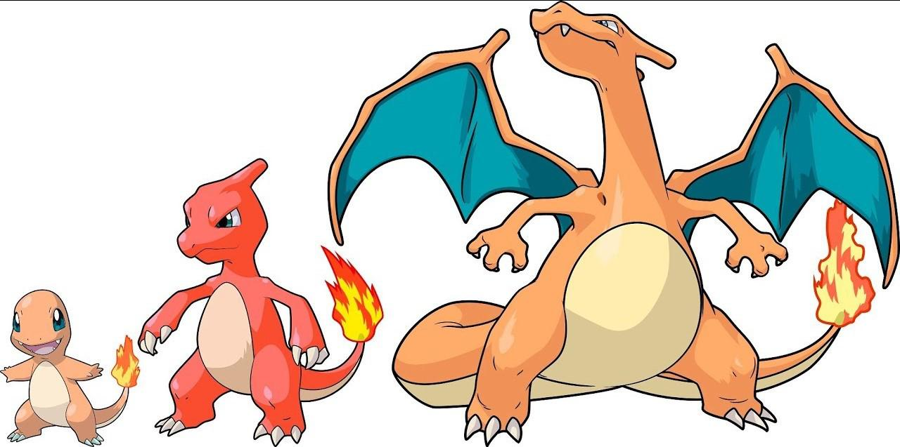
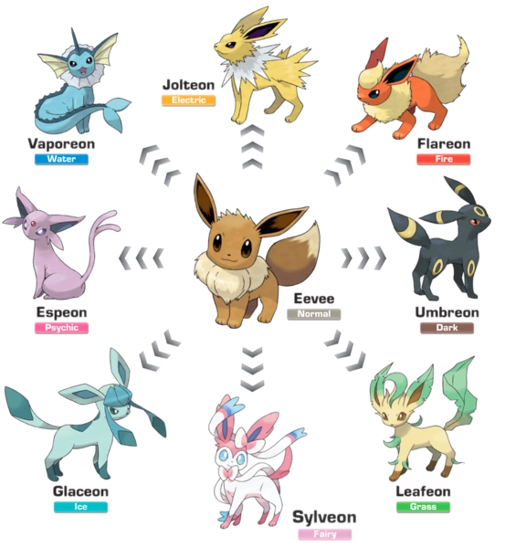
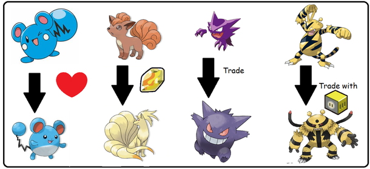
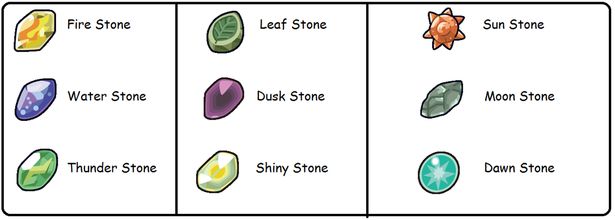

O que são as evoluções no universo de pokemon?
No mundo de Pokémon, evolução é quando um Pokémon muda de forma, ficando mais forte. Isso pode acontecer de várias formas: ao subir de nível (a mais comum), usando itens especiais (como pedras evolutivas), ou por troca entre jogadores. Alguns evoluem por amizade alta com o treinador, outros só em horários específicos (dia/noite). Há casos que dependem de aprender certos golpes ou estar em locais especiais. Evoluir normalmente aumenta status (ataque, defesa, etc.) e pode mudar o tipo do Pokémon. Nem todos os Pokémon evoluem, e alguns têm mais de uma forma evolutiva. Existem também evoluções temporárias, como Mega Evolução e formas regionais.
Exemplos de Evolução
Charmander → Charmeleon → Charizard

O charmander é um Pokémon que evolui da forma mais comum, que é por nível, sua linha evolutiva possui três estágios, e na sua terceira forma, e final ele ganha um novo tipo, e se torna um pokemon tipo fogo e voador.
Eevee → 8 evoluções diferentes!

A eevee é um dos Pokémon mais curiosos, pois ela tem 8 evoluções diferentes, e todas elas são segundo estágio. Suas evoluções são, Vaporeon (Tipo água), Jolteon(Tipo elétrico), Flareon(Tipo fogo), Umbreon(Tipo sombrio), Leafeon(Tipo grama), Sylveon(Tipo fada), Glaceon(Tipo gelo) e Espeon(Tipo psíquico). E o mais curioso é que cada uma dessas chamadas eeveelutions, evolui de formas diferentes, por exemplo, a Sylveon evolui por afinidade com o treinador, já o Leafeon evolui com uma Leaf Stone (Pedra evolutiva).
Outros métodos
Além das formas citadas existem muitas formas de se evoluir um pokémn, aqui estão alguns exemplos de pokémon que evoluem de formas diferentes:

PEDRAS EVOLUTIVAS
